Project 1: Image Filtering and Hybrid Images
In this assignment,an image filtering function is written so that it could create hybrid images. The interpretatioin of the hybrid image changeswith viewing distance. The input is two images, for example, image1 and image2, the function create a hybrid image that, when looks closely, it looks like image2, and when looks at a far distacne, it appears to be image1. In this report, the following contents is included.
- Implementation of Image Filtering
- Implementation of Hybrid Images
- Experiment Results of Hybrid Images
- Discussion
not much to say here
Implementation of Image Filtering
Although Matlab already has a built in function called "imfilter", it is still to our best that we write up an imfilter of our own to gain a deeper understanding of the convolution operation, note that the 2-D correlation process here is a 180 degree rotation from the convolution filter matrix.
Matlab code for Image Filtering
Below is the implementation of my_imfilter in Matlab
function output = my_imfilter(image, filter)
si=size(image);
sf=size(filter);
hf=floor(sf(1)/2);
wf=floor(sf(2)/2);
R=zeros(si(1),si(2));
G=zeros(si(1),si(2));
B=zeros(si(1),si(2));
for i=1:1:si(1)
sprintf('%2.2f%%', i/si(1)*100)
for j=1:1:si(2)
for i2=-hf:1:hf
for j2=-wf:1:wf
h=i+i2;w=j+j2;
if h<=0
h=2-h;
end
if h>si(1)
h=2*si(1)-h;
end
if w<=0
w=2-w;
end
if w>si(2)
w=2*si(2)-w;
end
R(i,j)=R(i,j) + image(h,w,1)*filter(hf+1+i2,wf+1+j2);
G(i,j)=G(i,j)+ image(h,w,2)*filter(hf+1+i2,wf+1+j2);
B(i,j)=B(i,j)+ image(h,w,3)*filter(hf+1+i2,wf+1+j2);
end
end
end
end
output(:,:,1)=R;
output(:,:,2)=G;
output(:,:,3)=B;
Without the various optimizations on harware level like matlab did,this version of my_imfilter runs far slower than the built in imfilter function. However, it does works with the following highlights.
- The function work for filters of any width and height combination, this is done by taking the size of the input filter and use that paramenter in the for loop for convolutioin.
- Boundary handling is tackled through mirroring the image content over the boundaries for padding. This is done by the four "if" sentences inside the "j2" loop, where the function will decide if the pixels in the filter is outside that image and if so, it would use the mirror pixel over the boundary for calculation.
- The function has reached its maximum speed, as the time complexity is O(n*m), where n is the nunmber of pixels in the image and m is the number of pixels in the filter.
- As the calculation speed is rather slow, the sprintf sentence allows user to have an idea of how many percentage of calculation has been done.
Implementation of Hybrid Images
To do this, a gaussian blur with a cutoff frequency is applied to image1 to create a low frequencies version of image 1 and image2. Then, the high frequencies of image2 is obtained through image2-image2_low_frequencies. Finally, we simply add up the high frequencies of image2 and low frequencies of image1 to create the hybrid image of them.
Core code for Hybrid Images
Below is the implementation of my_imfilter in Matlab
large_1d_blur_filter = fspecial('Gaussian', [cutoff_frequency*4+1 1], cutoff_frequency*4+1);
% Remove the high frequencies from image1 by blurring it.
low_frequencies = my_imfilter(image1, large_1d_blur_filter);
low_frequencies = my_imfilter(low_frequencies, large_1d_blur_filter');
% Remove the low frequencies from image2.
low_frequencies2 = my_imfilter(image2, large_1d_blur_filter);
low_frequencies2 = my_imfilter(low_frequencies2, large_1d_blur_filter');
high_frequencies = image2-low_frequencies2;
% Combine the high frequencies and low frequencies
hybrid_image = low_frequencies+high_frequencies;
Note that in this process, the cutoff_frequency is a paramenter that needs to be tuned for every pair of images to obtain a better result.To accelerate the calculation, as the blur filter is a gaussian filter, we can seperate the filtering process and blur sequentially in each direction, which can reduce the time complexity from O(n*m^2) to O(nm) where n is the number of pixels in the image and m is the size of the gaussian blur filter.
Experiment Results of Hybrid Images
Here we present 5 examples of hybrid images. From left to right, the sequence of the images is: high frequences of image1, low frequencies of image2, the hybrid image, visualization of hybrid image with diffrent scales.
| 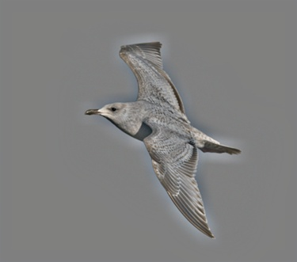 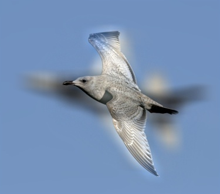 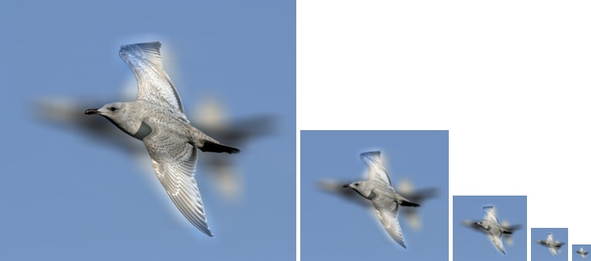 |
| 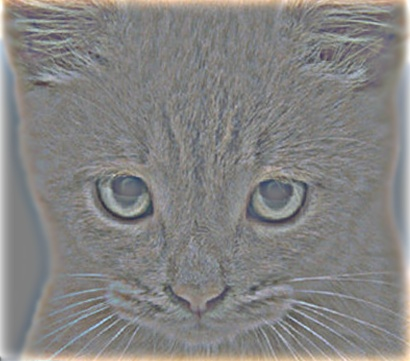 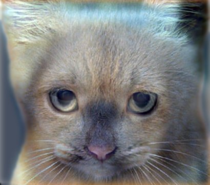 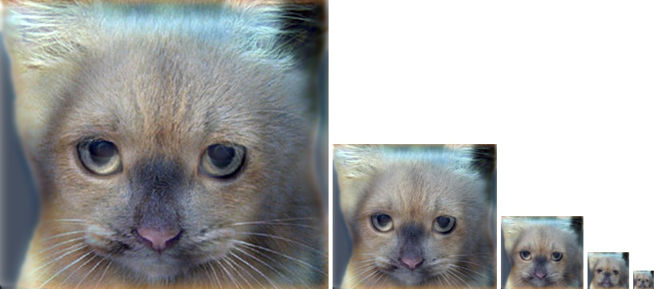 |
| 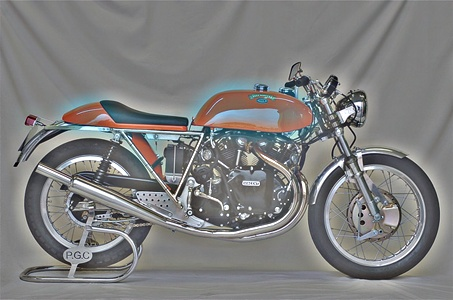 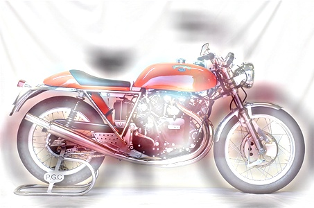 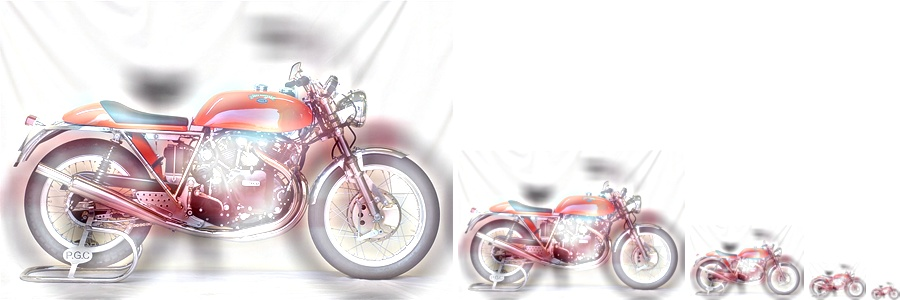 |
 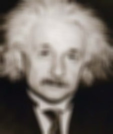
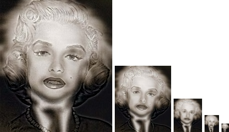
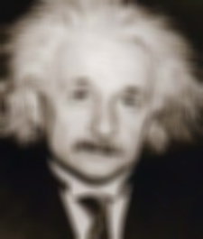
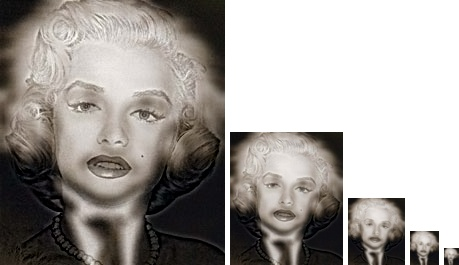
|
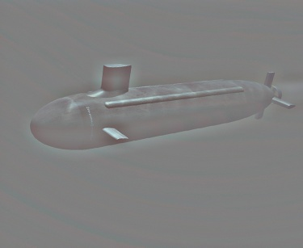

|
Look at the third row of the table, you would see the image whose high frequencies is substracted, and from a distance, or just look at the second image from the fourth row, you would see the image whose low frequencies is used.
Discussion
Increasing the speed of my_imfilter
As described earlier, the speed of my_imfilter is pretty slow because of the lack of optimizations on the architecture scale. Eventually, the function could do the calculation within 2 minutes for a image with 1000 pixels and gaussian blur filter with size 30*30. At first, the speed was even much slower. I did a few parameter optimization to avoid unecessary calculation, for example, pre allocating the RGB matrix and do the calculations for them all together in the very inner loop. And I also blured sequentially in each direction, which makes the filter n times faster(when the size of filter is n).
Determining the cut off frequency
We do the following gradient experiment, where we increase the cut off frequency from 1 to 10 with an interval of 3 and look at the results of he hybrid image. From left to right, the sequence of the images is: high frequences of image1, low frequencies of image2, the hybrid image.
 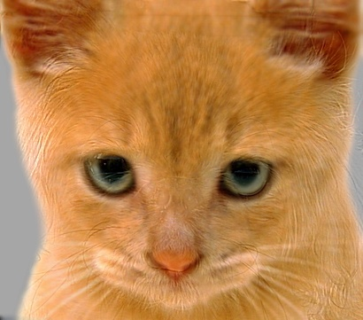
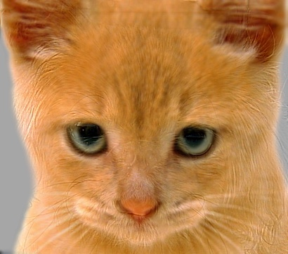
|
| 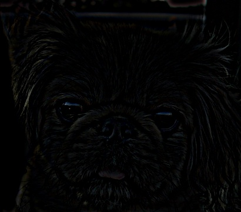 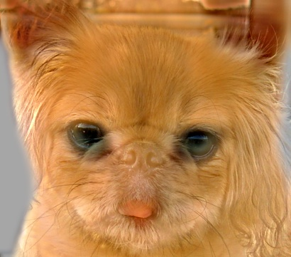 |
| 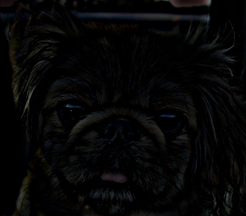 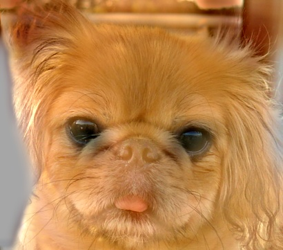 |
| 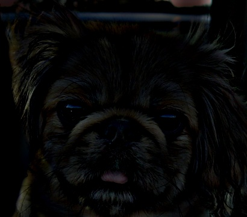 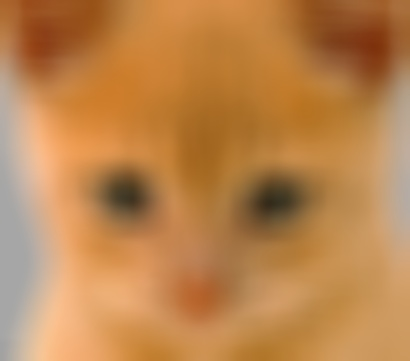 |
We can also reverse image1 and image2 and look at the result
| 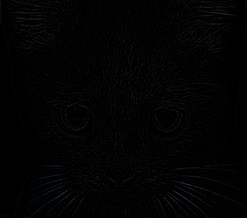 |
| 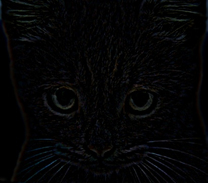 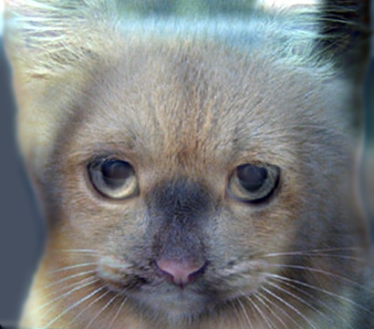 |
| 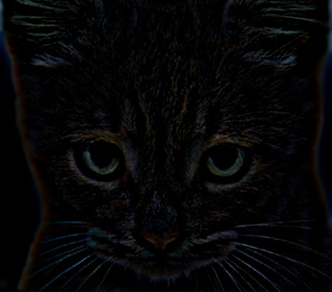 |


|
As is shown, the higher the cut off frequency gets, the more blurry the low frequencies image is, and the more details we can see from the high frequencies image. In a closer look, the hybrid image appears to be the image with the high frequencies better when the cut off frequency increasesm, while it requires a farther distance to observe the image with a low frequencies. It is also worth notifying that the color information is mostly contained in the low frequencies, and it is still very obvious when one is looking closely.
Future possible improvements
To achieve a better visual effect of the hybrid image, the cut off frequency needs to be tuned manually. So it would certainlly be better if we could find way to let the algorithm determine the cut off frequency itself. One way to do is that we first identify the size of the object in the parameter as pixels that we want to hybrid, and then we set the cut off frequency in accordiance with that size.